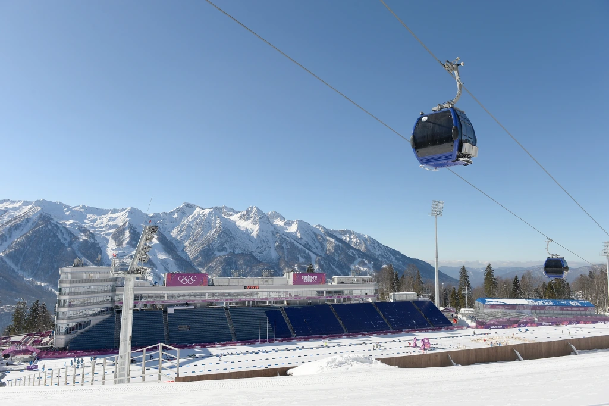

The Sochi Biathlon Track
The biathlon track at the Sochi Winter Olympics, which was supposed to be a loop of 2.5km (1.6 miles) was discovered to be 40 m (130 ft) short the day before opening. As a result of this miscalculation, competitors in 7.5 km events would have covered less than 7.4 km. Those who were in 12.5 km events would cover only 12.3 km as a result (BBC news). While most World Cup circuits are inspected several days before competition, organizers had less time to make tweaks to the course, as the IOC's were different. After a bit of hasty repair work, the track was the right length for the first event three days later. Additionally, the starting line was moved back 30 meters (98.4 feet).
Mars Climate Orbiter Failure
As a result of a simple math error in which spacecraft engineers didn’t convert from English to metric measurements, NASA lost its $125-million Mars Climate Orbiter. At the Jet Propulsion Laboratory, navigation teams use the metric system which includes meters and millimeters. The Lockheed Martin Astronautics, on the other hand, gave the acceleration data in English units of pound-seconds instead of newton-seconds, which is the metric alternative (they also designed and built the Orbiter). This resulted in the JPL engineers reading the English units of pounds-seconds as the metric measure of force of newton-seconds. As you could say, the spacecraft was “lost in translation” (Los Angeles Times). As a result of poor miscalculations, the spacecraft was so off track that it flew too deeply into Mars’ atmosphere and was destroyed when it entered its initial orbit around Mars. When it came around to who was to blame, NASA officials in Washington were unwilling to place blame on either JPL or Lockheed Martin. Instead, they said that the error emerged from a broader quality control failure
Air Canada Jet Runs Out of Gas
In the late 1970s, Canada went fully metric. On June 29th, 1983 Air Canada Flight 143's fuel gauge dropped to rock bottom. The plane was out of fuel. This was caused by confusion, as Air Canada just recently switched from measuring fuel in imperial pounds to the metric equivelent, kilograms. The flight originally went from Ottawa to Edmonton, but had to make an early landing in Gimili. Manitoba. Also because the plane ran out of fuel, the flaps couldn't be engadged on the 767. The plane landed at breakneck speeds. All 69 passengers about escaped with minor injuries.